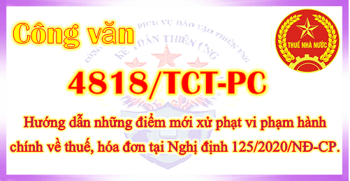

Ngày 12/11/2020 Tổng cục thuế ban hành Công văn 4818/TCT-PC về việc một số điểm mới trong xử phạt vi phạm hành chính về thuế, hóa đơn theo Nghị định 125/2020/NĐ-CP.

-----------------------------------------------------------------------------------------
|
BỘ TÀI CHÍNH TỔNG CỤC THUẾ ------- |
CỘNG HÒA XÃ HỘI CHỦ NGHĨA VIỆT NAM Độc lập - Tự do - Hạnh phúc --------------- |
|
Số: 4818/TCT-PC V/v một số điểm mới trong xử phạt vi phạm hành chính về thuế, hóa đơn và triển khai thực hiện Nghị định số 125/2020/NĐ-CP. |
Hà Nội, ngày 12 tháng 11 năm 2020 |
Kính gửi: Cục Thuế các tỉnh, thành phố trực thuộc Trung ương
Ngày 19 tháng 10 năm 2020, Chính phủ ban hành Nghị định 125/2020/NĐ-CP quy định xử phạt vi phạm hành chính về thuế, hóa đơn, có hiệu lực thi hành từ ngày 05 tháng 12 năm 2020, Tổng cục Thuế giới thiệu một số điểm mới trong xử phạt vi phạm hành chính về thuế, hóa đơn và triển khai thực hiện Nghị định số 125/2020/NĐ-CP nêu trên như sau:1. Tổng cục Thuế giới thiệu một số điểm mới trong xử phạt vi phạm hành chính về thuế, hóa đơn (chi tiết nêu tại Phụ lục đính kèm).
2. Giao Cục Công nghệ thông tin chủ trì, phối hợp với Vụ Pháp chế, Vụ Kê khai và Kế toán thuế để nâng cấp ứng dụng, đáp ứng yêu cầu, triển khai thực hiện quy định về lập biên bản vi phạm hành chính điện tử từ ngày 05/12/2020.
3. Đề nghị Cục trưởng Cục Thuế các tỉnh, thành phố trực thuộc Trung ương triển khai tuyên truyền, phổ biến nội dung Nghị định số 125/2020/NĐ-CP nêu trên tới công chức thuế, người nộp thuế và chuẩn bị các điều kiện để đảm bảo thi hành Nghị định số 125/2020/NĐ-CP từ ngày 05/12/2020.
Tổng cục Thuế đề nghị các Cục Thuế chủ động triển khai, thực hiện./.
|
Nơi nhận: - Như trên; - Lãnh đạo Tổng cục (để biết); - Các Vụ/đơn vị thuộc TCT (để thực hiện); - Lưu: VT, PC(2b). |
KT. TỔNG CỤC TRƯỞNG
PHÓ TỔNG CỤC TRƯỞNG
Phi Vân Tuấn
|
------------------------------------------------------------------------------
PHỤ LỤC:
ĐIỂM MỚI TRONG XỬ PHẠT VI PHẠM HÀNH CHÍNH THUẾ, HÓA ĐƠN
(Nghị định số 125/2020/NĐ-CP có hiệu lực thi hành từ ngày 05/12/2020)
I. Về quy định chungĐIỂM MỚI TRONG XỬ PHẠT VI PHẠM HÀNH CHÍNH THUẾ, HÓA ĐƠN
(Nghị định số 125/2020/NĐ-CP có hiệu lực thi hành từ ngày 05/12/2020)
1. Về phạm vi điều chỉnh
- Bổ sung quy định về việc không áp dụng Nghị định số 125/2020/NĐ-CP để xử phạt đối với vi phạm quy định về thủ tục đăng ký thuế, vi phạm quy định về thông báo tạm ngừng hoạt động kinh doanh, thông báo tiếp tục hoạt động kinh doanh trước thời hạn với cơ quan đăng ký kinh doanh, cơ quan đăng ký hợp tác xã của các tổ chức, cá nhân thực hiện đăng ký thuế cùng với đăng ký doanh nghiệp, đăng ký hợp tác xã, đăng ký kinh doanh (khoản 1 Điều 1).
- Bổ sung quy định rõ các khoản thu khác do cơ quan thuế quản lý thu (tiền sử dụng đất; tiền thuê đất, thuê mặt nước; tiền cấp quyền khai thác khoáng sản; tiền cấp quyền khai thác tài nguyên nước; lợi nhuận sau thuế còn lại sau khi trích tập các quỹ của doanh nghiệp do Nhà nước nắm giữ 100% vốn điều lệ; cổ tức, lợi nhuận được chia cho phần vốn nhà nước đầu tư tại công ty cổ phần, công ty trách nhiệm hữu hạn hai thành viên trở lên) thuộc phạm vi điều chỉnh của Nghị định số 125/2020/NĐ-CP (khoản 1 Điều 2).
2. Đối tượng bị xử phạt vi phạm hành chính về thuế, hóa đơn
- Bổ sung quy định khi pháp luật về thuế, quản lý thuế quy định nghĩa vụ, trách nhiệm của bên được ủy quyền phải thực hiện thay nghĩa vụ đăng ký, kê khai, nộp của người nộp thuế, nếu bên được ủy quyền có hành vi vi phạm hành chính quy định tại Nghị định 125/2020/NĐ-CP thì tổ chức, cá nhân được ủy quyền là đối tượng bị xử phạt (khoản 1 Điều 3).
- Quy định chi tiết các đối tượng bị xử phạt là tổ chức, trong đó quy định rõ đơn vị phụ thuộc của doanh nghiệp, địa điểm kinh doanh trực tiếp, kê khai nộp thuế, sử dụng hóa đơn được xác định là tổ chức bị xử phạt vi phạm hành chính về thuế, hóa đơn (khoản 2 Điều 3).
3. Giải thích một số cụm từ sử dụng trong xử phạt vi phạm hành chính về thuế, hóa đơn
- “Văn bản hướng dẫn của cơ quan thuế liên quan đến nội dung xác định nghĩa vụ thuế” là văn bản hành chính do cơ quan thuế các cấp ban hành để hướng dẫn một hoặc nhiều người nộp thuế thực hiện nghĩa vụ thuế trong một tình huống cụ thể.
- “Quyết định xử lý của cơ quan thuế liên quan đến nội dung xác định nghĩa vụ thuế của người nộp thuế" là quyết định xử lý về hoàn thuế đối với trường hợp kiểm tra trước hoàn thuế; quyết định miễn, giảm thuế; quyết định về gia hạn nộp hồ sơ khai thuế; xử lý số thuế giá trị gia tăng được khấu trừ hoặc được hoàn hoặc số lỗ chuyển kỳ sau trên quyết định xử phạt vi phạm hành chính hoặc quyết định áp dụng biện pháp khắc phục hậu quả.
- “Ngày bắt đầu tính quá thời hạn tại Điều 10, 11, 13, 14 và 19 Nghị định 125/2020/NĐ-CP” là ngày đầu tiên sau ngày kết thúc thời hạn phải thực hiện trách nhiệm, nghĩa vụ của tổ chức, cá nhân theo quy định của pháp luật về quản lý thuế. Trường hợp được gia hạn, ngày bắt đầu tính quá thời hạn là ngày đầu tiên sau ngày kết thúc thời hạn gia hạn.
- “Vụ việc có nhiều tình tiết phức tạp” là vụ việc được phát hiện qua thanh tra, kiểm tra thuế tại trụ sở người nộp thuế; vụ việc cần tham vấn từ các cơ quan, tổ chức chuyên ngành; vụ việc có hành vi khai sai dẫn đến thiếu số tiền thuế phải nộp hoặc tăng số tiền thuế được miễn, giảm, hoàn hoặc hành vi trốn thuế.
- “Vụ việc đặc biệt nghiêm trọng” là vụ việc có hành vi khai sai dẫn đến thiếu số tiền thuế phải nộp hoặc tăng số tiền thuế được hoàn hoặc hành vi trốn thuế liên tiếp từ ba kỳ tính thuế trở lên.
- “Ngày phát hiện hành vi vi phạm” là ngày người có thẩm quyền đang thi hành công vụ lập biên bản ghi nhận hành vi vi phạm hành chính của đối tượng bị xử phạt vi phạm hành chính về thuế, hóa đơn.
4. Nguyên tắc xử phạt tổ chức, cá nhân cùng một thời điểm thực hiện nhiều hành vi vi phạm hành chính về thuế, hóa đơn
- Bổ sung quy định trường hợp cùng một thời điểm người nộp thuế khai sai nhiều chỉ tiêu trên các hồ sơ thuế của cùng một sắc thuế thì hành vi khai sai thuộc trường hợp xử phạt về thủ tục thuế chỉ bị xử phạt về một hành vi khai sai chỉ tiêu trên hồ sơ thuế có khung phạt tiền cao nhất trong số các hành vi đã thực hiện và áp dụng tình tiết tăng nặng vi phạm nhiều lần.
- Bổ sung quy định trường hợp cùng một thời điểm người nộp thuế chậm nộp nhiều thông báo, báo cáo cùng loại về hóa đơn thì người nộp thuế bị xử phạt về một hành vi chậm nộp thông báo, báo cáo về hóa đơn có khung phạt tiền cao nhất trong số các hành vi đã thực hiện và áp dụng tình tiết tăng nặng vi phạm nhiều lần;
- Bổ sung quy định rõ hành vi vi phạm về sử dụng hóa đơn không hợp pháp, sử dụng không hợp pháp hóa đơn thuộc trường hợp bị xử phạt theo Điều 16, Điều 17 Nghị định 125/2020/NĐ-CP thì không bị xử phạt theo Điều 28 Nghị định 125/2020/NĐ-CP (điểm d khoản 3 Điều 5).
- Bổ sung nguyên tắc trong một thủ tục hành chính có nhiều thành phần hồ sơ được quy định nhiều hơn một hành vi vi phạm hành chính tại Nghị định số 125/2020/NĐ-CP thì tổ chức, cá nhân vi phạm bị xử phạt đối với từng hành vi vi phạm.
5. Tình tiết tăng nặng, giảm nhẹ
- Bổ sung quy định rõ về tình tiết tăng nặng “vi phạm hành chính thuế quy mô lớn” là vi phạm hành chính với số tiền thuế (số tiền thuế thiếu, số tiền thuế trốn hoặc số tiền thuế được miễn, giảm, hoàn cao hơn) từ 100.000.000 đồng trở lên hoặc giá trị hàng hóa, dịch vụ từ 500.000.000 đồng trở lên (khoản 2 Điều 6);
- Bổ sung quy định rõ về tình tiết tăng nặng “vi phạm hành chính về hóa đơn” có quy mô lớn là vi phạm hành chính từ 10 số hóa đơn trở lên (khoản 2 Điều 6).
6. Thời hiệu xử phạt vi phạm hành chính về thuế, hóa đơn
6.1. Thời hiệu xử phạt vi phạm hành chính về hóa đơn
Bổ sung quy định về thời điểm tính thời hiệu xử phạt vi phạm hành chính đối với hành vi vi phạm hành chính về hóa đơn đã kết thúc và hành vi vi phạm đang thực hiện (khoản 1 Điều 8).
6.2. Thời hiệu xử phạt vi phạm hành chính về thuế
- Sửa đổi quy định về ngày thực hiện hành vi vi phạm thủ tục thuế để tính thời hiệu xử phạt:
+ Hiện hành: Ngày thực hiện hành vi vi phạm hành chính về thuế là ngày kế tiếp ngày kết thúc thời hạn phải thực hiện thủ tục về thuế theo quy định của Luật quản lý thuế.
+ Quy định mới: Ngày thực hiện hành vi vi phạm hành chính về thủ tục thuế là ngày kế tiếp ngày kết thúc thời hạn phải thực hiện thủ tục về thuế theo quy định của pháp luật về quản lý thuế, trừ các trường hợp sau đây:
Đối với hành vi quy định tại khoản 1, điểm a, b khoản 2, khoản 3 và điểm a khoản 4 Điều 10; khoản 1, 2, 3, 4 và điểm a khoản 5 Điều 11; khoản 1, 2, 3 và điểm a, b khoản 4, khoản 5 Điều 13 Nghị định 125/2020/NĐ-CP, ngày thực hiện hành vi vi phạm để tính thời hiệu là ngày người nộp thuế thực hiện đăng ký thuế hoặc thông báo với cơ quan thuế hoặc nộp hồ sơ khai thuế.
Đối với hành vi quy định tại điểm c khoản 2, điểm b khoản 4 Điều 10; điểm b khoản 5 Điều 11; điểm c, d khoản 4 Điều 13 Nghị định 125/2020/NĐ-CP, ngày thực hiện hành vi vi phạm để tính thời hiệu là ngày người có thẩm quyền thi hành công vụ phát hiện hành vi vi phạm.
- Sửa đổi quy định về ngày thực hiện hành vi vi phạm đối với hành vi trốn thuế để tính thời hiệu xử phạt:
+ Hiện hành: Thời điểm xác định hành vi trốn thuế, gian lận thuế là ngày tiếp theo ngày cuối cùng của thời hạn nộp hồ sơ khai thuế của kỳ tính thuế mà người nộp thuế thực hiện hành vi trốn thuế, gian lận thuế hoặc ngày tiếp theo ngày cơ quan có thẩm quyền ra quyết định hoàn thuế, miễn thuế, giảm thuế.
+ Quy định mới: Ngày thực hiện hành vi trốn thuế (trừ hành vi tại điểm a khoản 1 Điều 17 Nghị định 125/2020/NĐ-CP) là ngày tiếp theo ngày cuối cùng của thời hạn nộp hồ sơ khai thuế của kỳ tính thuế mà người nộp thuế thực hiện trốn thuế hoặc ngày tiếp theo ngày cơ quan có thẩm quyền ra quyết định hoàn thuế, miễn thuế, giảm thuế.
Đối với hành vi không nộp hồ sơ đăng ký thuế, không nộp hồ sơ khai thuế tại điểm a khoản 1 Điều 17 Nghị định 125/2020/NĐ-CP, ngày thực hiện hành vi vi phạm để tính thời hiệu là ngày người có thẩm quyền thi hành công vụ phát hiện hành vi vi phạm. Đối với hành vi nộp hồ sơ khai thuế sau 90 ngày quy định tại điểm a khoản 1 Điều 17 Nghị định 125/2020/NĐ-CP thì ngày thực hiện hành vi vi phạm để tính thời hiệu là ngày người nộp thuế nộp hồ sơ khai thuế.
7. Nguyên tắc xác định mức phạt tiền khi áp dụng tình tiết tăng nặng, giảm nhẹ
- Sửa đổi quy định về xác định mức phạt tiền khi áp dụng tình tiết tăng nặng, giảm nhẹ đối với hành vi vi phạm thủ tục thuế:
+ Hiện hành: mỗi tình tiết tăng nặng hoặc giảm nhẹ được tính tăng hoặc giảm 20% mức phạt trung bình của khung phạt tiền.
+ Quy định mới: mỗi tình tiết tăng nặng hoặc giảm nhẹ được tính tăng hoặc giảm 10% mức phạt trung bình của khung phạt tiền (điểm d khoản 4 Điều 7).
- Bổ sung quy định rõ nguyên tắc xác định mức phạt tiền khi áp dụng tình tiết tăng nặng, giảm nhẹ đối với hành vi vi phạm về hóa đơn: mỗi tình tiết tăng nặng hoặc giảm nhẹ được tính tăng hoặc giảm 10% mức tiền phạt trung bình của khung tiền phạt.
8. Hình phạt bổ sung
Bỏ quy định về hình phạt bổ sung “đình chỉ quyền tự in hóa đơn, quyền khởi tạo hóa đơn điện tử”.
9. Biện pháp khắc phục hậu quả
Bổ sung một số biện pháp khắc phục hậu quả trong xử phạt vi phạm hành chính thuế, hóa đơn (khoản 3 Điều 7):
+ Buộc điều chỉnh lại số lỗ, số thuế giá trị gia tăng đầu vào được khấu trừ chuyển kỳ sau.
+ Buộc nộp hồ sơ thay đổi nội dung đăng ký thuế; khai lại và nộp bổ sung các tài liệu trong hồ sơ thuế; nộp hồ sơ khai thuế, phụ lục kèm theo hồ sơ khai thuế; cung cấp thông tin.
+ Buộc lập hóa đơn theo quy định;
+ Buộc tiêu hủy hóa đơn, các sản phẩm in;
+ Buộc lập và gửi thông báo, báo cáo về hóa đơn;
+ Buộc chuyển dữ liệu hóa đơn điện tử;
+ Buộc nộp lại số lợi bất hợp pháp có được do thực hiện hành vi vi phạm hành chính.
10. Thời hạn truy thu thuế
- Hiện hành: quy định thời hạn truy thu thuế là mười năm trở về trước, kể từ ngày phát hiện hành vi vi phạm.
- Quy định mới: quy định thời hạn truy thu thuế 10 năm trở về trước, kể từ ngày phát hiện hành vi vi phạm chỉ áp dụng đối với khoản thuế và khoản thu khác do tổ chức, cá nhân tự khai, tự nộp vào NSNN.
Riêng khoản thu từ đất đai hoặc khoản thu khác do cơ quan có thẩm quyền xác định nghĩa vụ tài chính của tổ chức, cá nhân thì cơ quan có thẩm quyền xác định thời hạn truy thu theo quy định của pháp luật về đất đai và pháp luật có liên quan nhưng không ít hơn thời hạn truy thu theo quy định tại điểm a khoản 6 Điều 8.
11. Những trường hợp không xử phạt vi phạm hành chính về thuế, hóa đơn
- Bổ sung quy định chi tiết trường hợp người nộp thuế chậm thực hiện thủ tục thuế, hóa đơn bằng phương thức điện tử do sự cố kỹ thuật của hệ thống công nghệ thông tin được thông báo trên Cổng thông tin điện tử của cơ quan thuế thuộc sự kiện bất khả kháng không bị xử phạt (Khoản 1 Điều 9).
- Bổ sung quy định 2 trường hợp không xử phạt vi phạm hành chính về thuế tại Điều 9:
+ Không xử phạt vi phạm hành chính về thuế, không tính tiền chậm nộp tiền thuế đối với người nộp thuế vi phạm hành chính về thuế do thực hiện theo văn bản hướng dẫn, quyết định xử lý của cơ quan thuế, cơ quan nhà nước có thẩm quyền liên quan đến nội dung xác định nghĩa vụ thuế của người nộp thuế.
+ Không xử phạt hành vi vi phạm thủ tục thuế đối với cá nhân trực tiếp quyết toán thuế thu nhập cá nhân chậm nộp hồ sơ quyết toán thuế thu nhập cá nhân mà có phát sinh số tiền thuế được hoàn; hộ kinh doanh, cá nhân kinh doanh đã bị ấn định thuế theo quy định tại Điều 51 Luật Quản lý thuế.
- Bổ sung quy định không áp dụng xử phạt hành vi vi phạm về thời hạn thông báo thay đổi thông tin trong đăng ký thuế tại khoản 6 Điều 11 đối với 03 trường hợp: (i) Cá nhân không kinh doanh đã được cấp mã số thuế thu nhập cá nhân chậm thay đổi thông tin về chứng minh nhân dân khi được cấp thẻ căn cước công dân; (ii) Cơ quan chi trả thu nhập chậm thông báo thay đổi thông tin về chứng minh nhân dân khi người nộp thuế thu nhập cá nhân là các cá nhân ủy quyền quyết toán thuế thu nhập cá nhân được cấp thẻ căn cước công dân; (iii) Thông báo thay đổi thông tin trên hồ sơ đăng ký thuế về địa chỉ người nộp thuế quá thời hạn quy định do thay đổi địa giới hành chính theo Nghị quyết của Ủy ban Thường vụ Quốc hội hoặc Nghị quyết của Quốc hội.
II. Về xử phạt hành vi vi phạm hành chính về thuế
1. Hành vi vi phạm thời hạn đăng ký thuế, thông báo tạm ngừng hoạt động kinh doanh, thông báo tiếp tục kinh doanh trước thời hạn (Điều 10):
- Tăng mức phạt tiền đối với hành vi vi phạm thời hạn về đăng ký thuế:
+ Hiện hành: phạt tiền từ 400.000đ đến 2.000.000đ.
+ Quy định mới: phạt tiền từ 1.000.000đ đến 10.000.000đ, trong đó quy định phạt tiền từ 6.000.000đ đến 10.000.000đ” đối với hành vi đăng ký thuế quá thời hạn quy định từ 91 ngày trở lên.
- Bổ sung chế tài xử phạt đối với hành vi vi phạm thời hạn thông báo tạm ngừng hoạt động kinh doanh, thông báo tiếp tục kinh doanh trước thời hạn.
2. Hành vi vi phạm thời hạn thông báo thay đổi thông tin trong đăng ký thuế (Điều 11):
- Tăng mức phạt tiền đối với hành vi vi phạm thời hạn thông báo thay đổi thông tin trong đăng ký thuế:
+ Hiện hành: phạt tiền từ 400.000đ đến 2.000.000đ.
+ Quy định mới: phạt tiền từ 500.000đ đến 7.000.000đ.
- Chia hành vi nộp thông báo thay đổi thông tin trong hồ sơ đăng ký thuế quá thời hạn thành 2 hành vi nhỏ với chế tài xử phạt khác nhau:
+ Thông báo thay đổi nội dung đăng ký thuế quá thời hạn quy định không làm thay đổi giấy chứng nhận đăng ký thuế hoặc thông báo mã số thuế;
+ Thông báo thay đổi nội dung đăng ký thuế quá thời hạn quy định làm thay đổi giấy chứng nhận đăng ký thuế hoặc thông báo mã số thuế mà có tình tiết giảm nhẹ.
- Bổ sung biện pháp khắc phục hậu quả vào khoản 7 Điều 11; Buộc nộp hồ sơ thay đổi nội dung đăng ký thuế đối với hành vi quy định tại điểm b khoản 5 Điều 11.
3. Hành vi khai sai, khai không đầy đủ các nội dung trong hồ sơ thuế không dẫn đến thiếu số tiền thuế (Điều 12):
- Tăng mức phạt tiền đối với hành vi vi khai sai, khai không đầy đủ các nội dung trong hồ sơ thuế:
+ Hiện hành: phạt tiền từ 400.000đ đến 3.000.000đ.
+ Quy định mới: phạt tiền từ 500.000đ đến 8.000.000đ.
- Bỏ 03 hành vi: (i) lập hồ sơ khai thuế ghi sai thiếu, ghi sai các chỉ tiêu trên bảng kê hóa đơn hàng hóa, dịch vụ mua vào, bán ra hoặc trên các tài liệu khác liên quan đến nghĩa vụ thuế; (ii) hành vi lập hồ sơ khai thuế ghi thiếu, ghi sai các chỉ tiêu trên hóa đơn và chứng từ khác liên quan đến nghĩa vụ thuế; (iii) khai sai dẫn đến thiếu số tiền thuế phải nộp theo hồ sơ khai thuế tạm tính theo quý nhưng chưa đến thời hạn nộp hồ sơ quyết toán thuế.
- Sắp xếp hành vi khai sai, khai không đầy đủ các nội dung trong hồ sơ thuế theo 3 hành vi nhỏ:
+ Hành vi khai sai, khai không đầy đủ các chỉ tiêu trong hồ sơ thuế (trừ tờ khai thuế) nhưng không liên quan đến xác định nghĩa vụ thuế
+ Hành vi khai sai, khai không đầy đủ các chỉ tiêu trên tờ khai thuế, các phụ lục kèm theo tờ khai thuế nhưng không liên quan đến xác định nghĩa vụ thuế.
+ Khai sai, khai không đầy đủ các chỉ tiêu liên quan đến xác định nghĩa vụ thuế trong hồ sơ thuế và hành vi khai sai, hành vi trốn thuế nhưng không dẫn đến thiếu thuế, trốn thuế.
- Tăng mức phạt tiền đối với hành vi khai sai nhưng không dẫn đến thiếu thuế, trốn thuế:
+ Hiện hành: phạt tiền từ 1.200.000đ đến 3.000.000đ.
+ Quy định mới: phạt tiền từ 5.000.000đ đến 8.000.000đ.
- Bổ sung biện pháp khắc phục hậu quả:
+ Buộc khai lại và nộp bổ sung các tài liệu trong hồ sơ thuế đối với hành vi quy định tại khoản 1, 2 và điểm a khoản 3 Điều 12;
+ Buộc điều chỉnh lại số lỗ, số thuế giá trị gia tăng đầu vào được khấu trừ chuyển kỳ sau (nếu có) đối với hành vi quy định tại khoản 3 Điều 12.
4. Hành vi chậm nộp hồ sơ khai thuế so với thời hạn quy định (Điều 13):
- Tăng mức phạt tiền đối với hành vi vi phạm về thời hạn nộp hồ sơ khai thuế:
+ Hiện hành: phạt tiền 400.000đ đến 5.000.000đ.
+ Quy định mới: phạt tiền từ 2.000.000đ đến 25.000.000đ.
- Thay đổi quy định về khung thời gian chậm nộp hồ sơ khai thuế:
+ Hiện hành: hành vi vi phạm về thời hạn nộp hồ sơ khai thuế chia thành 6 mức chậm nộp: “từ 01 đến 10 ngày”; “từ trên 10 ngày đến 20 ngày”; “từ trên 20 ngày đến 30 ngày”; “từ trên 30 ngày đến 40 ngày”; “từ trên 40 ngày đến 90 ngày”; “trên 90 ngày”.
+ Quy định mới: hành vi vi phạm về thời hạn nộp hồ sơ khai thuế chia thành 4 mức chậm nộp: “từ 01 đến 30 ngày”; “từ 31 ngày đến 60 ngày”; “từ 61 đến 90 ngày”; “trên 90 ngày”.
- Tăng mức phạt tiền đối với hành vi nộp hồ sơ khai thuế quá 90 ngày nhưng không phát sinh số phải nộp và hành vi không nộp hồ sơ khai thuế:
+ Hiện hành: phạt tiền từ 2.000.000đ đến 5.000.000đ.
+ Quy định mới: phạt tiền từ 8.000.000đ đến 15.000.000đ.
- Bổ sung chế tài xử phạt hành vi “không nộp các phụ lục theo quy định về quản lý thuế đối với doanh nghiệp có giao dịch liên kết kèm theo hồ sơ quyết toán thuế thu nhập doanh nghiệp”.
- Quy định mới về chế tài xử phạt đối với "hành vi nộp hồ sơ khai thuế quá thời hạn trên 90 ngày, có phát sinh số thuế phải nộp và người nộp thuế đã nộp đủ số tiền thuế, tiền chậm nộp vào ngân sách nhà nước trước thời điểm cơ quan thuế công bố quyết định kiểm tra thuế, thanh tra thuế hoặc trước thời điểm cơ quan thuế lập biên bản về hành vi chậm nộp hồ sơ khai thuế” với mức phạt tiền cao nhất từ 15.000.000đ đến 25.000.000đ. Trường hợp số tiền phạt lớn hơn số tiền thuế phát sinh trên hồ sơ khai thuế thì số tiền phạt tối đa đối với hành vi này bằng số tiền thuế phát sinh phải nộp trên hồ sơ khai thuế nhưng không thấp hơn mức trung bình của khung phạt tiền quy định tại khoản 4 Điều 13 (từ 8.000.000đ đến 15.000.000đ).
- Bổ sung quy định về biện pháp khắc phục hậu quả (khoản 6 Điều 13):
+ Buộc nộp đủ số tiền chậm nộp tiền thuế vào ngân sách nhà nước đối với hành vi vi phạm chậm nộp hồ sơ khai thuế trong trường hợp người nộp thuế chậm nộp hồ sơ khai thuế dẫn đến chậm nộp tiền thuế;
+ Buộc nộp hồ sơ khai thuế, phụ lục kèm theo hồ sơ khai thuế đối với hành vi quy định tại điểm c, d khoản 4 Điều 13.
5. Hành vi vi phạm quy định về cung cấp thông tin liên quan đến xác định nghĩa vụ thuế (Điều 14):
- Tăng mức phạt tiền đối với hành vi vi phạm quy định về cung cấp thông tin liên quan đến xác định nghĩa vụ thuế:
+ Hiện hành: phạt tiền từ 400.000đ đến 2.000.000đ.
+ Quy định mới: phạt tiền từ 2.000.000đ đến 5.000.000đ.
- Bổ sung biện pháp khắc phục hậu quả: buộc cung cấp thông tin đối với hành vi quy định tại khoản 2 Điều 14.
6. Hành vi vi phạm quy định về chấp hành quyết định kiểm tra, thanh tra thuế, cưỡng chế thi hành quyết định hành chính thuế (Điều 15):
- Tăng mức phạt tiền đối với hành vi vi phạm quy định về chấp hành quyết định kiểm tra, thanh tra thuế, cưỡng chế thi hành quyết định hành chính thuế:
+ Hiện hành: phạt tiền từ 800.000đ đến 5.000.000đ.
+ Quy định mới: phạt tiền từ 2.000.000đ đến 10.000.000đ.
- Bỏ hành vi “Không chấp hành kết luận kiểm tra, thanh tra thuế, cưỡng chế thi hành quyết định hành chính thuế của cơ quan có thẩm quyền".
- Bổ sung biện pháp khắc phục hậu quả: buộc cung cấp thông tin, tài liệu, sổ kế toán liên quan đến việc xác định nghĩa vụ thuế đối với hành vi quy định tại điểm d khoản 1 và điểm a khoản 2 Điều 15.
7. Hành vi khai sai dẫn đến thiếu số tiền thuế phải nộp hoặc tăng số tiền thuế được miễn, giảm, hoàn (Điều 16):
- Sửa đổi quy định về khai sai dẫn đến thiếu số tiền thuế phải nộp hoặc tăng số tiền thuế được miễn, giảm, hoàn:
+ Hiện hành: Khai sai dẫn đến thiếu số tiền thuế phải nộp hoặc tăng số tiền thuế được hoàn, tăng số thuế được miễn, giảm nhưng người nộp thuế đã ghi chép kịp thời, đầy đủ các nghiệp vụ kinh tế làm phát sinh nghĩa vụ thuế trên sổ kế toán, hóa đơn, chứng từ.
+ Quy định mới: Khai sai căn cứ tính thuế hoặc số tiền thuế được khấu trừ hoặc xác định sai trường hợp được miễn, giảm, hoàn thuế dẫn đến thiếu số tiền thuế phải nộp hoặc tăng số tiền thuế được miễn, giảm, hoàn nhưng các nghiệp vụ kinh tế đã được phản ánh đầy đủ trên hệ thống sổ kế toán, hóa đơn, chứng từ hợp pháp.
- Sửa đổi quy định về xử phạt hành vi khai sai dẫn đến thiếu thuế nhưng người nộp thuế đã tự giác khắc phục hậu quả:
+ Hiện hành: Hành vi khai sai của người nộp thuế làm giảm số tiền thuế phải nộp hoặc tăng số tiền thuế được hoàn, số thuế được miễn, giảm không thuộc trường hợp quy định tại điểm a khoản 1 Điều 10 Nghị định số 129/2013/NĐ-CP nhưng khi bị cơ quan có thẩm quyền phát hiện, người vi phạm đã tự giác nộp đủ số tiền thuế khai thiếu vào ngân sách nhà nước trước thời điểm cơ quan có thẩm Quyền lập biên bản vi phạm hành chính thuế hoặc cơ quan thuế lập biên bản kiểm tra thuế, kết luận thanh tra thuế.
+ Quy định mới: Khai sai làm giảm số tiền thuế phải nộp hoặc tăng số tiền thuế được hoàn, số tiền thuế được miễn, giảm không thuộc trường hợp quy định tại điểm a khoản 1 Điều 16 Nghị định số 125/2020/NĐ-CP nhưng người nộp thuế đã tự giác kê khai bổ sung và nộp đủ số tiền thuế thiếu vào ngân sách nhà nước trước thời điểm cơ quan thuế kết thúc thời hạn thanh tra, kiểm tra thuế tại trụ sở người nộp thuế.
- Bổ sung thêm một trường hợp xử phạt về hành vi khai sai dẫn đến thiếu thuế: “Khai sai dẫn đến thiếu số tiền thuế phải nộp hoặc tăng số tiền thuế được miễn, giảm, hoàn đối với giao dịch liên kết nhưng người nộp thuế đã lập hồ sơ xác định giá thị trường hoặc đã lập và gửi cơ quan thuế các phụ lục theo quy định về quản lý thuế đối với doanh nghiệp có giao dịch liên kết”.
- Bổ sung biện pháp khắc phục hậu quả tại điểm b khoản 2 Điều 16: “Buộc điều chỉnh lại số lỗ, số thuế giá trị gia tăng đầu vào được khấu trừ chuyển kỳ sau (nếu có)” đối với hành vi quy định tại khoản 1 Điều 16 Nghị định số 125/2020/NĐ-CP.
8. Hành vi trốn thuế (Điều 17):
- Bỏ cụm từ “gian lận thuế”.
- Sửa đổi quy định về mức phạt tiền áp dụng đối tổ chức, cá nhân thực hiện hành vi trốn thuế1:
+ Hiện hành: áp dụng nguyên tắc mức phạt tiền của cá nhân bằng 1/2 lần mức phạt tiền của tổ chức.
+ Quy định mới: áp dụng chung mức phạt tiền cho cả cá nhân và tổ chức.
- Sửa quy định về áp dụng số lần thuế trốn đối với hành vi trốn thuế:
| Nội dung | Hiện hành | Quy định mới |
| Phạt 1 lần thuế trốn | Vi phạm lần đầu hoặc vi phạm lần thứ hai mà có từ hai tình tiết giảm nhẹ trở lên. | Thực hiện hành vi trốn thuế và có 1 tình tiết giảm nhẹ. |
| Phạt 1,5 lần thuế trốn | Vi phạm lần đầu có tình tiết tăng nặng hoặc vi phạm lần 2 mà có một tình tiết giảm nhẹ. | Thực hiện hành vi trốn thuế và mà không có tình tiết tăng nặng, giảm nhẹ. |
| Phạt 2 lần thuế trốn | Vi phạm lần thứ hai mà không có tình tiết giảm nhẹ hoặc vi phạm lần thứ ba nhưng có một tình tiết giảm nhẹ. | Thực hiện hành vi trốn thuế và có một tình tiết tăng nặng. |
| Phạt 2,5 lần thuế trốn | Vi phạm lần thứ 2 mà có một tình tiết tăng nặng hoặc vi phạm lần thứ ba mà không có tình tiết giảm nhẹ. | Thực hiện hành vi trốn thuế và có hai tình tiết tăng nặng. |
| Phạt 3 lần thuế trốn | Vi phạm từ lần thứ 2 mà có hai tình tiết tăng nặng trở lên hoặc vi phạm lần thứ 3 mà có tình tiết tăng nặng hoặc vi phạm lần thứ 4 trở lên | Thực hiện hành vi trốn thuế và có từ ba tình tiết tăng nặng trở lên. |
9. Xử phạt vi phạm hành chính về thuế đối với ngân hàng thương mại, người bảo lãnh nộp tiền thuế (Điều 18):
Thu hẹp đối tượng bị xử phạt đối với hành vi không trích chuyển tiền từ tài khoản của người nộp thuế vào tài khoản của ngân sách nhà nước theo yêu cầu của cơ quan thuế:
+ Hiện hành: áp dụng đối với các tổ chức tín dụng nói chung.
+ Quy định mới: áp dụng đối với ngân hàng thương mại.
10. Xử phạt vi phạm hành chính về thuế đối với tổ chức, cá nhân liên quan (Điều 19):
- Điều chỉnh tăng mức phạt tiền từ đối với hành vi “thông đồng, bao che người nộp thuế trốn thuế, gian lận thuế, không thực hiện quyết định cưỡng chế hành chính thuế; hành vi không cung cấp hoặc cung cấp không chính xác thông tin liên quan đến tài sản, quyền, nghĩa vụ về tài sản của người nộp thuế do mình nắm giữ...”:
+ Hiện hành: phạt tiền từ 5.000.000đ đến 10.000.000đ đối với tổ chức; từ 2.500.000đ đến 5.000.000đ đối với cá nhân.
+ Quy định mới: phạt tiền từ từ 6.000.000đ đến 16.000.000đ đối với tổ chức; từ 3.000.000đđến 8.000.000đ đối với cá nhân
- Bổ sung chế tài xử phạt đối với hành vi cung cấp thông tin, tài liệu liên quan đến xác định nghĩa vụ thuế, tài khoản của người nộp thuế theo yêu cầu của cơ quan thuế quá thời hạn quy định từ 05 ngày trở lên.
- Bổ sung quy định về biện pháp khắc phục hậu quả: buộc cung cấp thông tin đối với hành vi quy định tại điểm b khoản 2 Điều 19.
III. Về xử phạt hành vi vi phạm hành chính về hóa đơn
1. Hành vi vi phạm quy định về tự in hóa đơn và khởi tạo hóa đơn điện tử
Sửa đổi chế tài xử phạt đối với hành vi vi phạm quy định về tự in hóa đơn và khởi tạo hóa đơn điện tử:
+ Hiện hành: quy định 1 Điều riêng xử phạt hành vi vi phạm quy định về tự in hóa đơn và khởi tạo hóa đơn điện tử.
+ Quy định mới: Không quy định riêng chế tài xử phạt đối với hành vi vi phạm quy định về tự in hóa đơn và khởi tạo hóa đơn điện tử mà thực hiện xử phạt nhóm hành vi này theo hành vi vi phạm quy định về lập hóa đơn
2. Hành vi vi phạm quy định về hóa đơn đặt in (Điều 20):
Bỏ chế tài xử phạt đối với hành vi “không thanh lý hợp đồng in nếu quá thời hạn thanh lý hợp đồng quy định trong hợp đồng đặt in hóa đơn hoặc thời điểm kết thúc hợp đồng khi đã lập tờ Thông báo phát hành hóa đơn”.
3. Hành vi vi phạm quy định về in hóa đơn đặt in (Điều 21):
- Chuyển hình thức xử phạt từ phạt tiền sang phạt cảnh cáo đối với hành vi:
+ Báo cáo về việc nhận in hóa đơn quá thời hạn theo quy định từ 01 đến 05 ngày, kể từ ngày hết thời hạn theo quy định;
+ Báo cáo về việc nhận in hóa đơn quá thời hạn theo quy định từ 06 ngày đến 10 ngày, kể từ ngày hết thời hạn theo quy định và có tình tiết giảm nhẹ.
- Bổ sung chế tài phạt tiền từ 500.000 đồng đến 1.500.000 đồng đối với hành vi in hóa đơn đặt in mà không ký hợp đồng in bằng văn bản.
- Bỏ chế tài xử phạt đối với hành vi "không thanh lý hợp đồng in nếu quá thời hạn thanh lý hợp đồng quy định trong hợp đồng đặt in hóa đơn hoặc thời điểm kết thúc hợp đồng khi bên đặt in đã hoàn thành thủ tục thông báo phát hành”.
4. Hành vi cho, bán hóa đơn (Điều 22):
- Biên tập lại hành vi cho, bán hóa đơn
+ Hiện hành: hành vi cho, bán hóa đơn nằm rời rạc tại nhiều Điều khoản khác nhau.
+ Quy định mới: nhóm các hành vi cho, bán hóa đơn quy định tập trung tại Điều 22.
- Bổ sung biện pháp khắc phục hậu quả: buộc nộp lại số lợi bất hợp pháp có được do thực hiện hành vi vi phạm cho, bán hóa đơn.
5. Hành vi vi phạm quy định về phát hành hóa đơn (Điều 23):
Điều chỉnh lại mức phạt tiền đối với hành vi “nộp thông báo điều chỉnh thông tin tại thông báo phát hành hóa đơn... ", “Nộp bảng kê hóa đơn chưa sử dụng đến cơ quan thuế nơi chuyển đến khi thay đổi địa chỉ kinh doanh dẫn đến thay đổi cơ quan thuế quản lý trực tiếp”.
6. Hành vi vi phạm quy định về lập hóa đơn khi bán hàng hóa, dịch vụ (Điều 24)
- Biên tập lại hành vi vi phạm quy định về lập hóa đơn:
+ Hiện hành: quy định hành vi vi phạm quy định về lập hóa đơn trong nhóm hành vi vi phạm quy định về sử dụng hóa đơn khi bán hàng hóa, cung ứng dịch vụ.
+ Quy định mới: tách nhóm hành vi vi phạm quy định về lập hóa đơn ra khỏi nhóm hành vi vi phạm quy định về sử dụng hóa đơn và chuyển quy định riêng về nhóm hành vi vi phạm quy định về lập hóa đơn.
- Điều chỉnh giảm hình thức xử phạt tiền sang phạt cảnh cáo đối với hành vi:
+ Lập hóa đơn không đúng thời điểm nhưng không dẫn đến chậm thực hiện nghĩa vụ thuế và có tình tiết giảm nhẹ;
+ Lập hóa đơn liên tục từ số nhỏ đến số lớn nhưng khác quyển (dùng quyển có số thứ tự lớn hơn và chưa dùng quyển có số thứ tự nhỏ hơn) và tổ chức, cá nhân sau khi phát hiện ra đã hủy các quyển hóa đơn có số thứ tự nhỏ hơn;
+ Lập sai loại hóa đơn theo quy định đã giao cho người mua hoặc đã kê khai thuế, bên bán và bên mua phát hiện việc lập sai loại hóa đơn và lập lại loại hóa đơn đúng theo quy định trước khi cơ quan có thẩm quyền công bố quyết định thanh tra, kiểm tra tại trụ sở người nộp thuế và không ảnh hưởng đến việc xác định nghĩa vụ thuế.
- Bỏ chế tài xử phạt đối với hành vi:
+ Không lập đủ các nội dung bắt buộc trên hóa đơn theo quy định, trừ các trường hợp hóa đơn không nhất thiết phải lập đầy đủ các nội dung theo hướng dẫn của Bộ Tài chính;
+ Không lập bảng kê về hóa đơn bán hàng, cung ứng dịch vụ;
+ Lập hóa đơn nhưng không giao cho người mua, trừ trường hợp trên hóa đơn ghi rõ người mua không lấy hóa đơn hoặc hóa đơn được lập theo bảng kê.
- Điều chỉnh giảm khung phạt tiền đối với hành vi “không lập hóa đơn tổng hợp theo quy định của pháp luật về hóa đơn bán hàng hóa, cung ứng dịch vụ”.
+ Hiện hành: phạt tiền từ 4.000.000đ đến 8.000.000đ.
+ Quy định mới: phạt tiền từ 500.000đ đến 1.500.000đ.
- Bổ sung chế tài xử phạt hành vi:
+ Lập hóa đơn điện tử khi chưa có thông báo chấp thuận của cơ quan thuế hoặc trước ngày cơ quan thuế chấp nhận việc sử dụng hóa đơn điện tử có mã hoặc không có mã của cơ quan thuế.
+ Lập hóa đơn bán hàng hóa, dịch vụ trong thời gian tạm ngừng hoạt động kinh doanh, trừ trường hợp lập hóa đơn giao cho khách hàng để thực hiện các hợp đồng đã ký trước ngày thông báo tạm ngừng kinh doanh;
+ Lập hóa đơn điện tử từ máy tính tiền không có kết nối, chuyển dữ liệu điện tử với cơ quan thuế.
- Bổ sung biện pháp khắc phục hậu quả: Buộc lập hóa đơn theo quy định đối với hành vi quy định tại điểm d khoản 4, khoản 5 Điều 24 khi người mua có yêu cầu.
7. Hành vi vi phạm quy định về khai báo mất, cháy, hỏng hóa đơn (Điều 25):
- Bổ sung quy định về hành vi vi phạm thời hạn khai báo mất, cháy, hỏng hóa đơn.
- Điều chỉnh giảm mức phạt tiền đối với hành vi không khai báo việc làm mất hóa đơn trong khi in, trước khi giao cho khách hàng:
+ Hiện hành: phạt tiền từ 6.000.000đ đến 18.000.000đ.
+ Quy định mới: phạt tiền từ 4.000.000đ đến 8.000.000đ.
8. Hành vi làm mất, cháy, hỏng hóa đơn (Điều 26):
- Biên tập lại hành vi “làm mất, cháy, hỏng hóa đơn”, theo đó hành vi mất, cháy, hỏng hóa đơn không nằm trong nhóm hành vi vi phạm quy định về sử dụng hóa đơn mà quy định riêng thành nhóm hành vi mất cháy hỏng hóa đơn:
+ Hiện hành: hành vi “làm mất cháy hỏng hóa đơn” thuộc nhóm hành vi vi phạm quy định về sử dụng hóa đơn.
+ Quy định mới: tách hành vi “làm mất cháy hỏng hóa đơn” khỏi nhóm hành vi vi phạm quy định về sử dụng hóa đơn và chuyển quy định về nhóm hành vi làm mất, cháy, hỏng hóa đơn.
- Điều chỉnh giảm từ phạt tiền xuống phạt cảnh cáo đối với các hành vi:
+ Làm mất, cháy, hỏng hóa đơn đã lập (trừ liên giao cho khách hàng) trong quá trình sử dụng, đã kê khai, nộp thuế, có hồ sơ chứng từ chứng minh việc mua bán hàng hóa, dịch vụ và có tình tiết giảm nhẹ;
+ Làm mất, cháy, hỏng hóa đơn đã lập sai, đã xóa bỏ và người bán đã lập hóa đơn khác thay thế cho hóa đơn lập sai, xóa bỏ này.
- Bổ sung quy định chế tài xử phạt đối với hành vi làm mất, cháy, hỏng hóa đơn đã lập, đã khai, nộp thuế trong trong thời gian lưu trữ.
9. Hành vi vi phạm quy định về hủy, tiêu hủy hóa đơn (Điều 27):
- Bổ sung quy định xử phạt hành vi vi phạm quy định về tiêu hủy hóa đơn.
- Biên tập lại hành vi “không hủy hoặc hủy không đúng quy định các hóa đơn đã phát hành nhưng chưa lập, không còn giá trị sử dụng theo quy định”:
+ Hiện hành: hành vi “không hủy hoặc hủy không đúng quy định các hóa đơn đã phát hành nhưng chưa lập, không còn giá trị sử dụng theo quy định” thuộc nhóm hành vi vi phạm quy định về sử dụng hóa đơn.
+ Quy định mới: tách hành vi “không hủy hoặc hủy không đúng quy định các hóa đơn đã phát hành nhưng chưa lập, không còn giá trị sử dụng theo quy định” khỏi nhóm hành vi vi phạm quy định về sử dụng hóa đơn và chuyển quy định về nhóm hành vi vi phạm quy định về hủy hóa đơn.
- Bổ sung quy định hành vi vi phạm quy định thời hạn hủy hóa đơn.
- Bổ sung chế tài xử phạt đối với một số hành vi:
+ Không hủy hóa đơn theo quy định của pháp luật;
+ Không hủy hóa đơn điện tử khi lập sai sót sau khi quá thời hạn cơ quan thuế thông báo cho người bán về việc kiểm tra sai, sót;
+ Hủy hóa đơn không đúng trình tự, thủ tục theo quy định của pháp luật;
- Bổ sung quy định biện pháp khắc phục hậu quả buộc hủy “hóa đơn đặt in chưa phát hành nhưng không còn sử dụng” đối với hành vi quy định tại điểm b khoản 2, điểm b, c, d khoản 3 Điều 27 Nghị định số 125/2020/NĐ-CP.
10. Hành vi sử dụng hóa đơn không hợp pháp, sử dụng không hợp pháp hóa đơn (Điều 28):
- Bổ sung quy định rõ về hành vi sử dụng hóa đơn không hợp pháp, sử dụng không hợp pháp hóa đơn (Điều 4).
- Bổ sung biện pháp khắc phục hậu quả: buộc hủy hóa đơn đã sử dụng.
11. Hành vi vi phạm quy định về lập, gửi thông báo, báo cáo về hóa đơn (Điều 29):
- Bổ sung quy định xử phạt cảnh cáo đối với hành vi nộp thông báo, báo cáo về hóa đơn quá thời hạn quy định từ 01 ngày đến 05 ngày, kể từ ngày hết thời hạn theo quy định mà có tình tiết giảm nhẹ.
- Tăng mức phạt tiền đối với hành vi lập sai hoặc không đầy đủ nội dung của thông báo, báo cáo về hóa đơn theo quy định gửi cơ quan thuế:
+ Hiện hành: phạt từ 200.000đ đến 1.000.000đ
+ Quy định mới: phạt tiền từ 1.000.000đ đến 3.000.000đ.
- Bổ sung chế tài xử phạt đối với hành vi nộp thông báo, báo cáo về hóa đơn quá thời hạn quy định từ 01 ngày đến 10 ngày.
- Tăng mức phạt tiền đối với hành vi nộp thông báo, báo cáo về hóa đơn gửi cơ quan thuế quá thời hạn quy định từ 91 ngày trở lên, kể từ ngày hết thời hạn theo quy định; hành vi không nộp thông báo, báo cáo về hóa đơn gửi cơ quan thuế theo quy định:
+ Hiện hành: phạt tiền từ 4.000.000đ đến 8.000.000đ
+ Quy định mới: phạt tiền từ 5.000.000đ đến 15.000.000đ.
12. Hành vi vi phạm quy định khác về hóa đơn
Bổ sung 2 nhóm hành vi về hóa đơn điện tử: hành vi vi phạm quy định về chuyển dữ liệu hóa đơn điện tử (Điều 30); hành vi vi phạm quy định về cung cấp dịch vụ hóa đơn (Điều 31).
IV. Về thẩm quyền, thủ tục xử phạt VPHC về thuế, hóa đơn
1. Thẩm quyền xử phạt vi phạm hành chính về thuế, hóa đơn
1.1. Thẩm quyền xử phạt của cơ quan thuế
- Bỏ quy định về thẩm quyền phạt tiền của công chức thuế;
- Quy định chi tiết thẩm quyền của từng chức danh đối với từng hành vi vi phạm;
- Thống nhất thẩm quyền phạt tiền đối với hành vi vi phạm hành chính về thuế, hóa đơn của Đội trưởng Đội thuế, Chi cục trưởng Chi cục Thuế, Cục trưởng Cục Thuế.
- Bổ sung quy định về thẩm quyền áp dụng hình thức xử phạt bổ sung đình chỉ hoạt động in hóa đơn có thời hạn của Thủ trưởng cơ quan thuế.
1.2. Thẩm quyền xử phạt của Ủy ban nhân dân
- Bỏ quy định thẩm quyền xử phạt của Chủ tịch Ủy ban nhân dân cấp xã;
- Quy định chi tiết thẩm quyền xử phạt và áp dụng biện pháp khắc phục hậu quả của Chủ tịch Ủy ban nhân dân cấp huyện, cấp tỉnh đối với hành vi vi phạm thủ tục thuế.
- Tăng thẩm quyền xử phạt của Chủ tịch UBND cấp huyện, cấp tỉnh đối với hành vi vi phạm hành chính về hóa đơn:
+ Hiện hành: Chủ tịch UBND cấp huyện có thẩm quyền phạt tiền đến 25.000.000đ. Chủ tịch UBND cấp tỉnh có thẩm quyền phạt tiền đến 50.000.000đ.
+ Quy định mới: Chủ tịch UBND cấp huyện có thẩm quyền phạt tiền đến 50.000.000đ. Chủ tịch UBND cấp tỉnh có thẩm quyền phạt tiền đến 100.000.000đ.
- Bổ sung quy định về thẩm quyền của Chủ tịch UBND cấp huyện, cấp tỉnh trong việc áp dụng hình phạt bổ sung đình chỉ hoạt động in hóa đơn có thời hạn.
1.3. Thẩm quyền xử phạt của Thanh tra
- Bổ sung quy định thẩm quyền xử phạt của các chức danh thanh tra có thẩm quyền về thủ tục thuế, hóa đơn, theo đó:
+ Trưởng Đoàn thanh tra của Cục Thuế, Tổng cục Thuế thực hiện chức năng thanh tra chuyên ngành có thẩm quyền xử phạt tiền đến 50.000.000đ đối với hành vi vi phạm thủ tục thuế, hóa đơn.
+ Trưởng đoàn thanh tra Bộ Tài chính thực hiện chức năng thanh tra chuyên ngành có quyền phạt tiền đến 140.000.000đ đối với hành vi vi phạm thủ tục thuế; phạt tiền đến 70.000.000đ đối với hành vi vi phạm về hóa đơn.
+ Chánh thanh tra Bộ Tài chính có thẩm quyền phạt tiền đến 200.000.000đ đối với hành vi vi phạm thủ tục thuế; phạt tiền đến 100.000.000đ đối với hành vi vi phạm hành chính về hóa đơn
- Bổ sung quy định thẩm quyền của Trưởng đoàn thanh tra Cục Thuế, Trưởng đoàn thanh tra Tổng cục Thuế, Trưởng đoàn thanh tra Bộ Tài chính, Chánh Thanh tra Bộ áp dụng hình phạt bổ sung đình chỉ hoạt động in hóa đơn có thời hạn.
2. Về thủ tục xử phạt vi phạm hành chính về thuế, hóa đơn
- Bổ sung quy định về lập biên bản vi phạm hành chính và biên bản vi phạm hành chính điện tử, trong đó quy định rõ biên bản vi phạm hành chính điện tử không bắt buộc phải có chữ ký của tổ chức, cá nhân vi phạm.
- Bổ sung quy định về các trường hợp được quyền giải trình vi phạm hành chính về thuế, hóa đơn gồm: hành vi vi phạm hành chính về thuế, hóa đơn được phát hiện thông qua công tác thanh tra thuế, kiểm tra thuế hoặc các trường hợp lập biên bản vi phạm hành chính điện tử; hành vi vi phạm hành chính quy định tại Điều 16, 17, 18; khoản 3 Điều 20; khoản 7 Điều 21; Điều 22 và Điều 28 Nghị định 125/2020/NĐ-CP.
- Bổ sung quy định về giao, gửi quyết định xử phạt vi phạm hành chính về thuế, hóa đơn bằng phương thức điện tử theo địa chỉ người nộp thuế đã đăng ký với cơ quan thuế đối với trường hợp cá nhân, tổ chức bị xử phạt đủ điều kiện thực hiện giao dịch điện tử trong lĩnh vực thuế.
3. Về thi hành quyết định xử phạt vi phạm hành chính về thuế, hóa đơn
- Bổ sung quy định về thời hiệu thi hành quyết định xử phạt vi phạm hành chính về thuế, trong đó quy định rõ trường hợp cơ quan thuế đã giao, gửi quyết định xử phạt vi phạm hành chính nhưng cá nhân, tổ chức bị xử phạt chưa nộp hoặc chưa nộp đủ tiền phạt, tiền thuế truy thu, tiền chậm nộp thì cơ quan thuế phải theo dõi các khoản tiền chưa nộp trên hệ thống quản lý thuế và áp dụng các biện pháp cưỡng chế nợ thuế theo quy định.
- Bổ sung quy định về thi hành quyết định xử phạt vi phạm hành chính về thuế trong trường hợp người bị xử phạt chết, mất tích; tổ chức bị xử phạt giải thể, phá sản, trong đó quy định rõ căn cứ xác định cá nhân chết, mất tích; tổ chức bị giải thể, phá sản như sau:
+ Giấy chứng tử hoặc giấy báo tử hoặc các giấy tờ thay cho giấy báo tử theo quy định của pháp luật về hộ tịch hoặc quyết định của tòa án tuyên bố một người là đã chết, mất tích (bản chính hoặc bản sao theo quy định) đối với trường hợp cá nhân chết, mất tích;
+ Thông báo về việc doanh nghiệp, hợp tác xã giải thể của cơ quan đăng ký kinh doanh, cơ quan đăng ký hợp tác xã đối với trường hợp doanh nghiệp, hợp tác xã bị giải thể; thông báo chấm dứt mã số thuế của cơ quan thuế đối với trường hợp tổ chức bị giải thể không phải là doanh nghiệp, hợp tác xã (bản chính hoặc bản sao theo quy định);
+ Quyết định tuyên bố phá sản đối với doanh nghiệp, hợp tác xã bị phá sản (bản chính hoặc bản sao theo quy định).
- Quy định rõ tổ chức bị giải thể là đơn vị phụ thuộc, địa điểm kinh doanh của doanh nghiệp hoặc giải thể do tổ chức lại doanh nghiệp, hợp tác xã, tổ chức khác hoặc giải thể chi nhánh, văn phòng đại diện của thương nhân nước ngoài, văn phòng điều hành của nhà thầu nước ngoài tại Việt Nam thì tổ chức bị giải thể không được miễn thi hành hình thức phạt tiền tại quyết định xử phạt.
4. Về miễn tiền phạt vi phạm hành chính về thuế
- Sửa đổi quy định về đối tượng và các trường hợp được miễn tiền phạt:
+ Hiện hành: Miễn, giảm tiền phạt vi phạm hành chính về thuế, hóa đơn đối với cá nhân bị xử phạt vi phạm hành chính về thuế, hóa đơn mà số tiền phạt từ 3.000.000 đồng trở lên trong trường hợp gặp khó khăn đặc biệt, đột xuất về kinh tế do thiên tai, hỏa hoạn, thảm họa, tai nạn, dịch bệnh, bệnh hiểm nghèo.
+ Quy định mới: Miễn tiền phạt vi phạm hành chính về thuế, hóa đơn đối với người nộp thuế (bao gồm cả cá nhân và tổ chức) bị xử phạt vi phạm hành chính về thuế, hóa đơn bị thiệt hại về vật chất trong trường hợp bất khả kháng do: gặp thiên tai, thảm họa, dịch bệnh; chiến tranh, bạo loạn, đình công phải ngừng, nghỉ sản xuất, kinh doanh hoặc rủi ro không thuộc nguyên nhân, trách nhiệm chủ quan của người nộp thuế mà người nộp thuế không có khả năng nguồn tài chính nộp ngân sách nhà nước.
- Bổ sung quy định chi tiết về thẩm quyền miễn tiền phạt và trình tự thủ tục miễn tiền phạt.
5. Về áp dụng văn bản và điều khoản chuyển tiếp
5.1. Áp dụng văn bản
- Áp dụng quy định tại Chương XV Luật số 38/2019/QH14 ngày 13 tháng 6 năm 2019; Nghị định số 129/2013/NĐ-CP ngày 16 tháng 10 năm 2013 của Chính phủ quy định về xử phạt vi phạm hành chính về thuế và cưỡng chế thi hành quyết định hành chính thuế; Nghị định số 109/2013/NĐ-CP ngày 24 tháng 9 năm 2013 của Chính phủ quy định xử phạt vi phạm hành chính trong lĩnh vực quản lý giá, phí, lệ phí, hóa đơn và Nghị định số 49/2016/NĐ-CP ngày 27 tháng 5 năm 2016 của Chính phủ sửa đổi, bổ sung một số điều của Nghị định số 109/2013/NĐ-CP đối với hành vi vi phạm hành chính về thuế, hóa đơn xảy ra từ ngày 01 tháng 7 năm 2020 đến trước ngày Nghị định 125/2020/NĐ-CP có hiệu lực.
- Trường hợp hành vi vi phạm hành chính về thuế, hóa đơn thực hiện trước ngày Nghị định số 125/2020/NĐ-CP có hiệu lực nhưng hành vi vi phạm đó kết thúc kể từ khi Nghị định số 125/2020/NĐ-CP có hiệu lực thì áp dụng quy định tại văn bản quy phạm pháp luật về xử phạt vi phạm hành chính về thuế, hóa đơn có hiệu lực tại thời điểm thực hiện hành vi vi phạm đó.
- Áp dụng Nghị định số 125/2020/NĐ-CP để xử phạt đối với hành vi vi phạm hành chính phát sinh từ ngày 05 tháng 12 năm 2020.
Người nộp thuế áp dụng hóa đơn điện tử theo quy định của Luật Quản lý thuế số 38/2019/QH14 ngày 13 tháng 6 năm 2019 và các văn bản quy phạm pháp luật hướng dẫn Luật này trước ngày 01 tháng 7 năm 2022 nếu vi phạm quy định về hóa đơn điện tử thì bị xử phạt theo quy định tại Nghị định số 125/2020/NĐ-CP.
5.2. Về điều khoản chuyển tiếp
- Các quy định về xử phạt tại Chương I, II, III Nghị định số 125/2020/NĐ-CP, quy định về hoãn, miễn thi hành quyết định xử phạt có lợi cho cá nhân, tổ chức vi phạm hành chính về thuế, hóa đơn được áp dụng đối với hành vi xảy ra trước ngày Nghị định 125/2020/NĐ-CP có hiệu lực thi hành mà sau đó mới bị phát hiện hoặc đang xem xét, giải quyết.
- Đối với các hành vi vi phạm hành chính về thuế, hóa đơn đã bị xử phạt trước ngày Nghị định số 125/2020/NĐ-CP có hiệu lực mà cá nhân, tổ chức còn khiếu nại, khởi kiện thì được giải quyết theo quy định của pháp luật xử phạt vi phạm hành chính về thuế và hóa đơn và các quy định pháp luật liên quan có hiệu lực tại thời điểm thực hiện hành vi vi phạm.
6. Về mẫu biểu sử dụng trong xử phạt vi phạm hành chính về thuế, hóa đơn
Bổ sung biểu mẫu sử dụng trong xử phạt tại Phụ lục đính kèm Nghị định số 125/2020/NĐ-CP phù hợp với kỹ thuật soạn thảo văn bản hành chính quy định tại Nghị định số 30/2020/NĐ-CP./.
Kế toán Diệu Tâm chúc các bạn thành công!
-----------------------------------------------------------------------------------